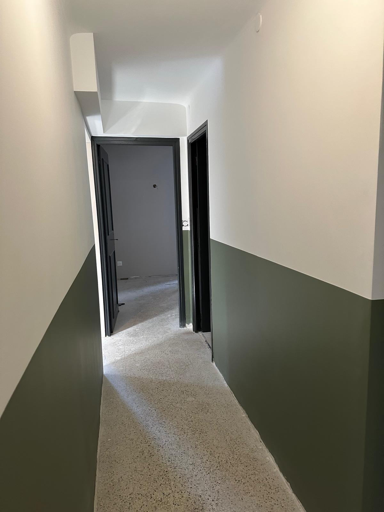
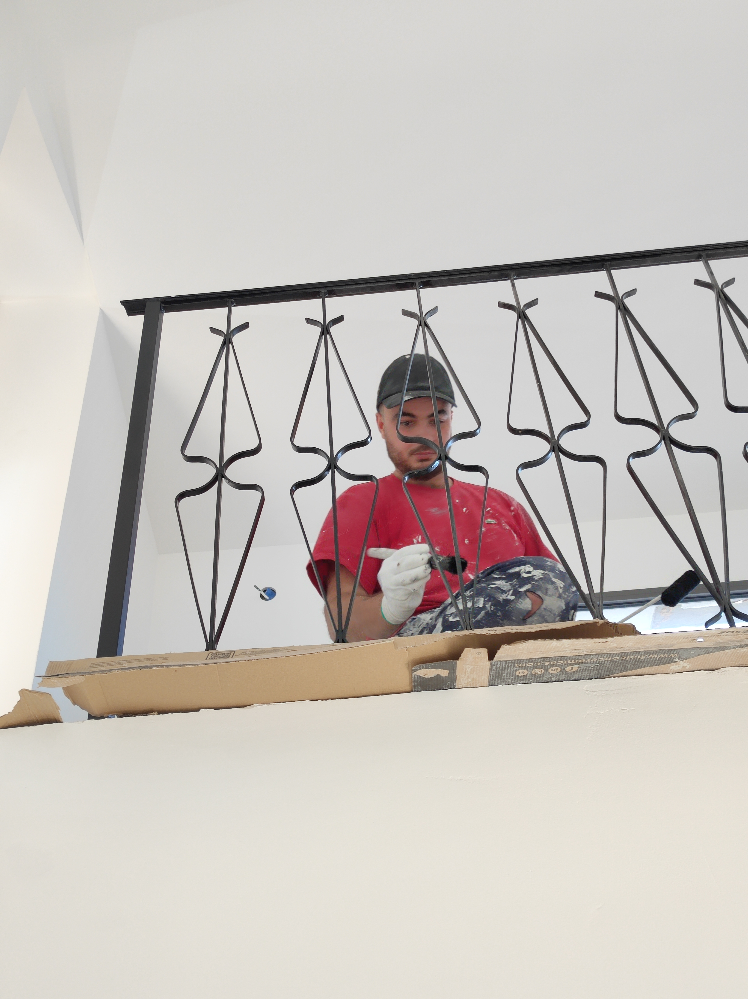

Mise en valeur de vos menuiseries
Les menuiseries intérieures contribuent fortement à l'harmonie d'un intérieur. Une peinture bien réalisée transforme l'aspect d'une pièce et protège durablement le bois.


Nos réalisations en peinture intérieure






Éléments traités
- Portes intérieures (planes, à panneaux, vitrées)
- Cadres de portes et huisseries
- Plinthes et baguettes de finition
- Escaliers (marches, contremarches, rambardes)
- Fenêtres intérieures et embrasures
- Boiseries décoratives et moulures
Conseil de pro : La tendance est au contraste entre murs clairs et menuiseries foncées (vert, bleu nuit, anthracite). Nous proposons des échantillons gratuits avant engagement.